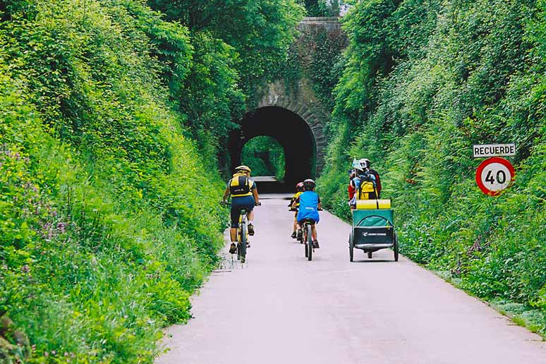
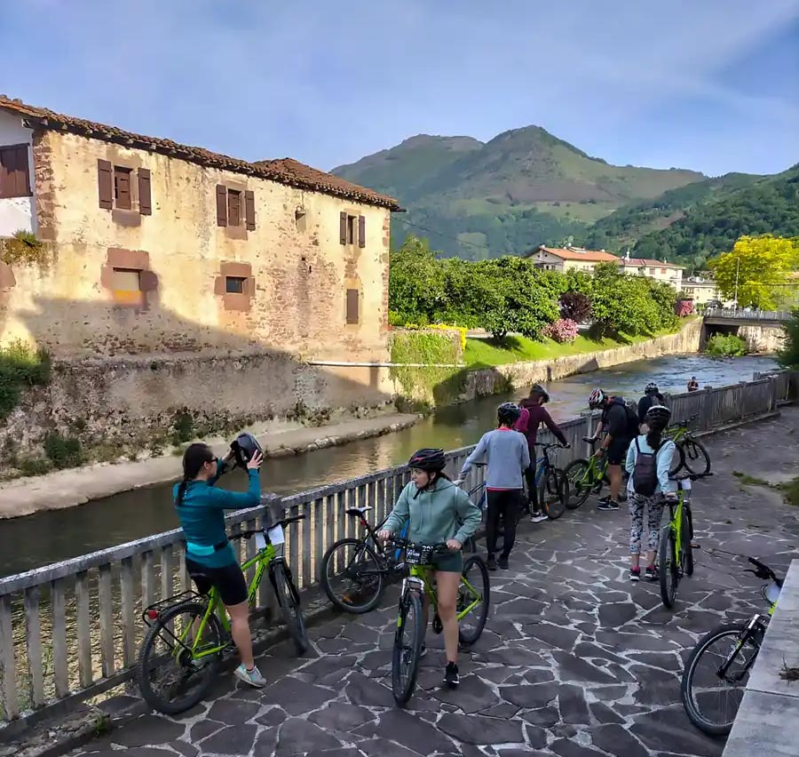
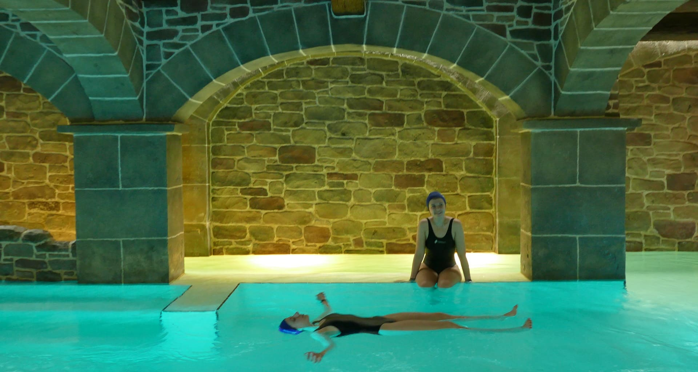
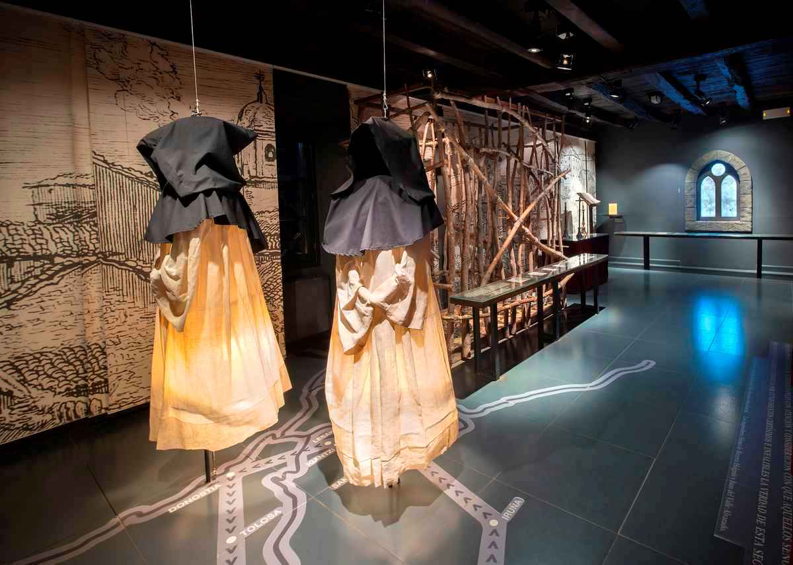

Actividades en el entorno
Via verde del Bidasoa
Recorrido original de la Vía Verde del Bidasoa entre los puentes de Behobia/Irun y el Parque Natural de Bertiz. Siguiendo siempre la orilla derecha del río Bidasoa, atraviesa poblaciones como Sunbilla, Doneztebe/Santesteban, Legasa y Oieregi, donde finaliza en el mismo Parque Natural de Bertiz
La Vía Verde del Bidasoa recupera buen parte del trazado del Tren Txikito (Elizondo-Irun) y ofrece un recorrido inolvidable de 39 km por pueblos de gran belleza de Gipuzkoa y Navarra a orillas del Bidasoa.
Alquiler de bicis Garmendi TX
Centro especializado en bicicletas, tanto de BTT como de E-BIKES ubicado en la localidad de Doneztebe / Santesteban. Ofrece al cliente toda la información en rutas, taller de auto reparación, duchas, vestuarios, punto de lavado de las bicis. En definitiva, todo lo que un aficionado de las bicis necesita.
Balneario de Elgorriaga
En el norte de Elgorriaga, pequeña población del noroeste navarro, se asienta una extensa finca en la que se encuentra el manantial de aguas minerales. Son las aguas más saladas de Europa y manan a una temperatura de entre 14º y 16º C. Con el fin de emplear los beneficios de este líquido para la salud se han construido diversos edificios en forma de plaza.
Museo de las Brujas
En el Pirineo occidental, superado el valle de Baztan y a escasa distancia de la frontera con Francia se encuentra Zugarramurdi, el pueblo de las brujas, donde fantasía y realidad se mezclan para regalar a la imaginación la posibilidad de hacer un apasionante viaje a través del tiempo.
En el Museo de las Brujas conoceréis el proceso inquisitorial que vivió Zugarramurdi en el S. XVII a través de audiovisuales, atractivas escenografías y pantallas interactivas.
